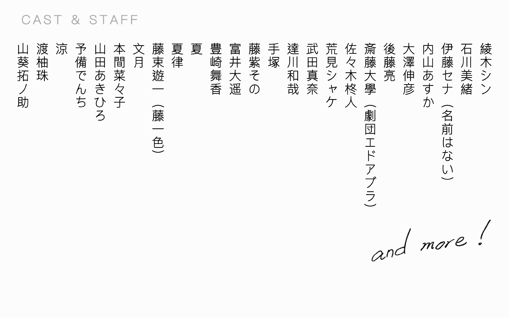

更新情報
- 2023年9月1日
- 第5回公演『しばらくは木の家』・『みんなのへや』の情報を更新しました
- 2023年5月29日
- 謎解き公演『モンスター潜むマオウ城からの脱出』の情報を更新しました
- 2022年6月4日
- 第４回公演『エゴ・サーチ』の情報を更新しました！！
- 2022年2月4日
- 第４回公演『エゴ・サーチ』の情報を更新しました！！
- 2022年1月11日
- 番外公演『理想と現実の交錯』の情報を更新しました！！
- 2020年2月25日
- 第3回公演の情報を更新しました！！
- 2019年11月28日
- 第3回公演『凄六』・『占い師のお仕事』のチケット予約開始＆チラシ公開！
ごあいさつ
「熊谷で芝居集団、作っちゃいます？」
こんな会話から生まれた演劇ユニット。
埼玉県熊谷市を中心に活動する演劇ユニット、
「きそう」
熊谷市在住のメンバーから、
埼玉県南部、群馬県、栃木県、
東京都在住のメンバーまで。
起草段階から作っていく意味での「きそう」
奇想天外なアイデアが飛び出す「きそう」
既作と創作、どちらも行う「きそう」
はたまた、お客さんが「きそう」な演劇集団
それが、演劇ユニット「きそう」
Twitterを見る
上演記録
- 2017年 秋
- 演劇ユニット「きそう」活動開始
- 2017年10月14日
- 公式Twitter開設
- 2018年2月11・12日
- 旗揚げ公演『ロングタイム・アゴー』『ここだけの話』@LIVE SPACE CASA TAJI
- 2018年12月15・16日
- 第2回公演『イントレランスの祭』@熊谷市立市民ホール
- 2019年8月19日
- 番外公演『こつつぼ』@北池袋新生館シアター
- 2020年1月25・26日
- 第3回公演『凄六』『占い師のお仕事』@熊谷市立市民ホール
- 2021年3月23・27・28日
- 番外公演『理想と現実の交錯』@北池袋新生館シアター
- 2022年4月30日・5月1日
- 第4回公演『エゴ・サーチ』@熊谷文化創造館さくらめいと 月のホール
- 2023年6月24日・25日
- 謎解き公演『モンスター潜むマオウ城からの脱出』@熊谷文化創造館さくらめいと 会議室1
謎解き公演
第4回公演

番外公演

第3回公演

番外公演